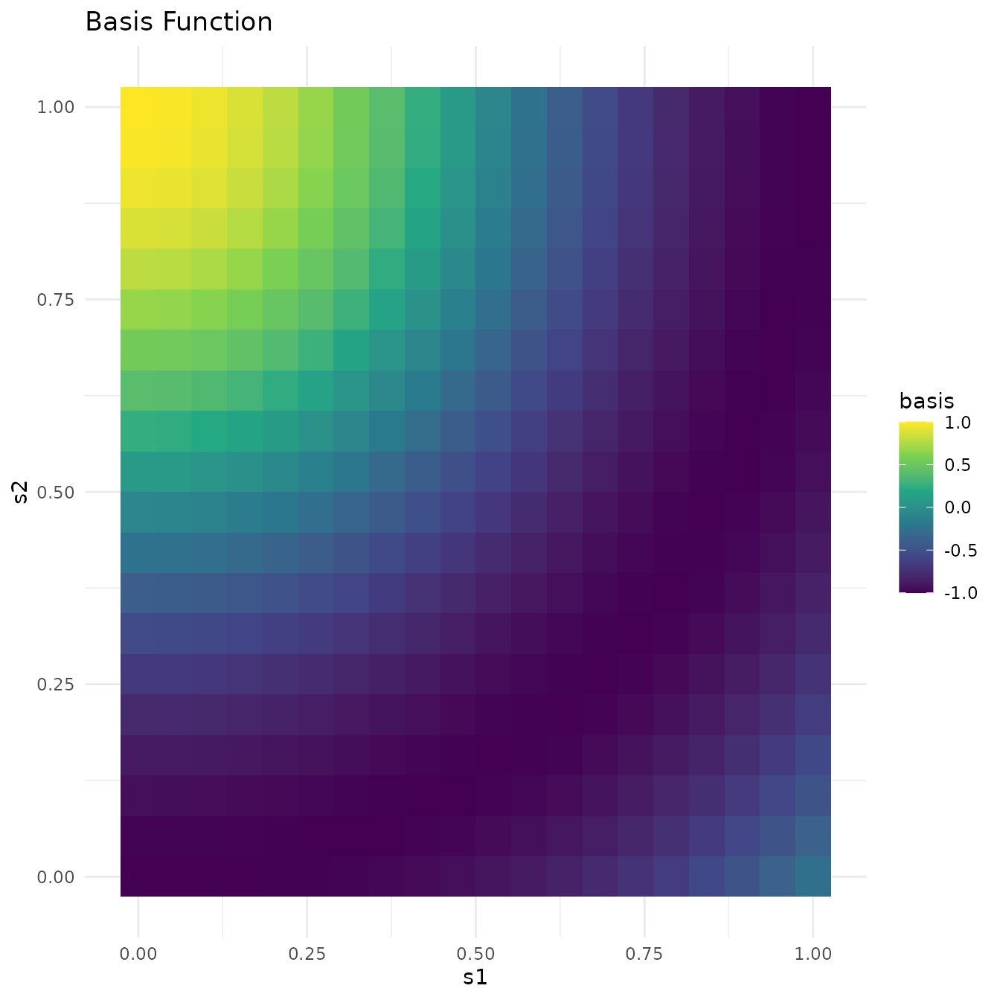
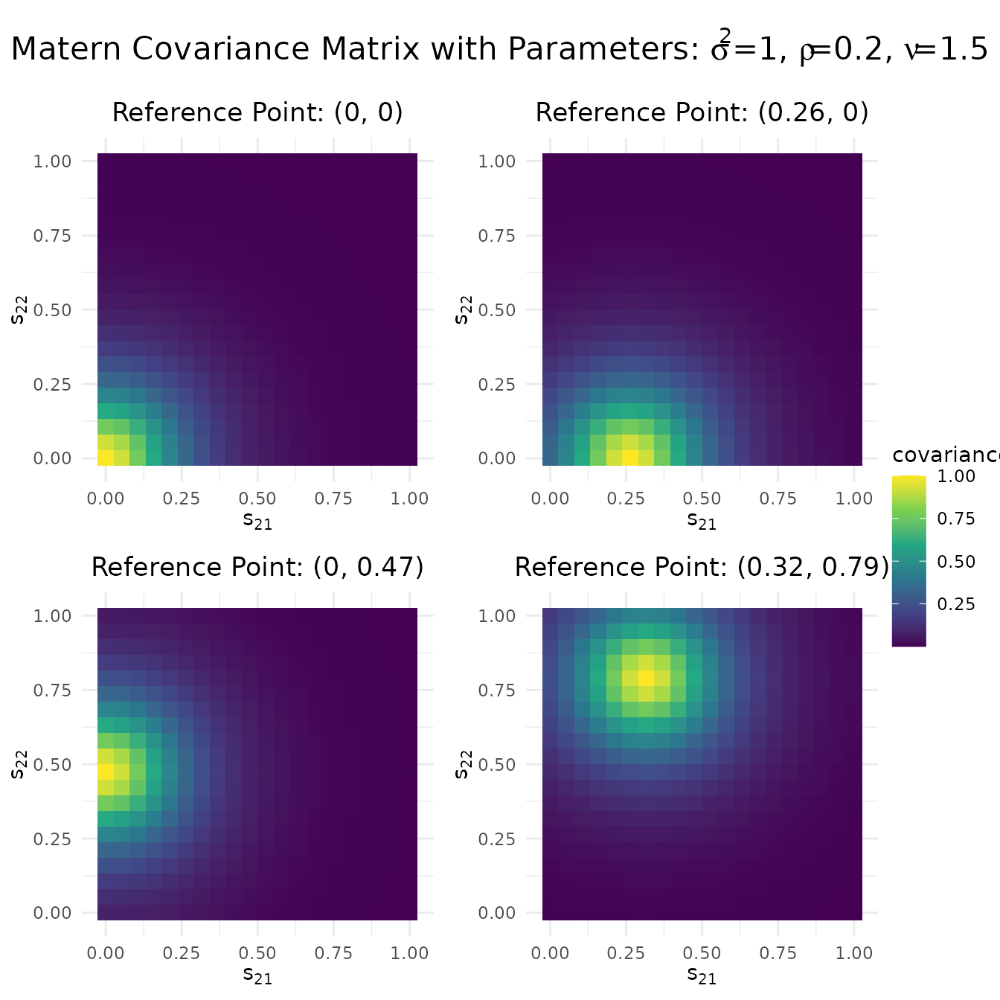
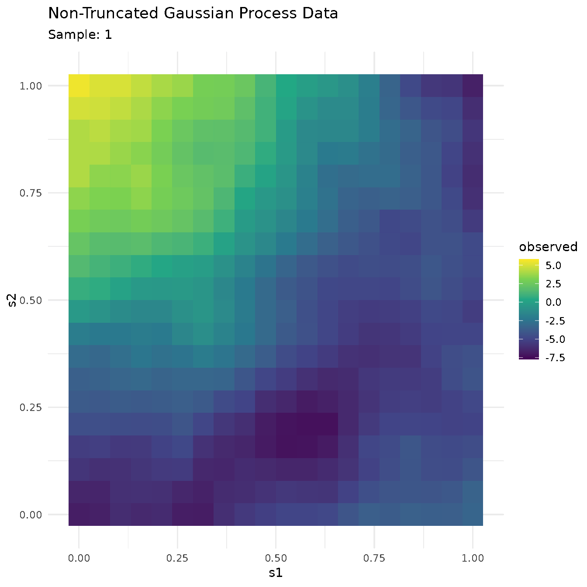
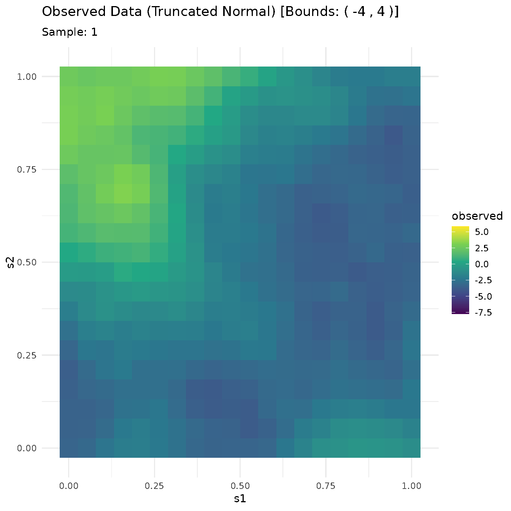

Summary
This vignette demonstrates the simulation and visualization of
multivariate normal and truncated multivariate normal data using Matern
covariance functions. We define a grid of locations, apply basis
functions to generate mean functions, and simulate both non-truncated
and truncated multivariate normal samples.
-
Multivariate Normal Distribution:
where:
-
Basis Function:
-
Coefficient:
-
Matern Covariance
()
Parameters:
-
Truncated Multivariate Normal Distribution:
with the same
and
as above, and:
-
Truncation Bounds:
Define Grid and Basis Function

Define Matern Covariance Function

Simulate Multivariate Normal Data

Animated plot of multivariate normal
samples
Simulate Truncated Multivariate Normal Data

Animated plot of truncated multivariate normal
samples